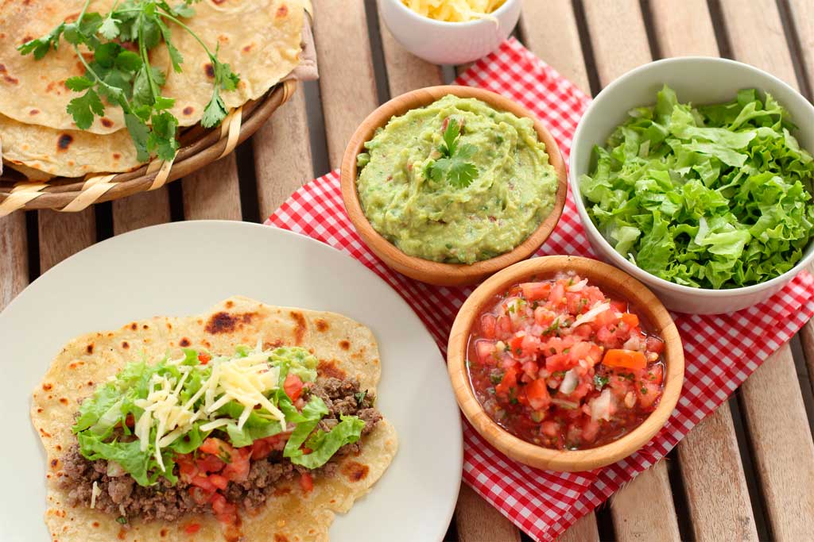

Mario López
@Mario
- Especialidad: Comida mexicana
- Ubicación: Guadalajara, México
Biografía
Me apasiona la gastronomía mexicana y los sabores auténticos. ¡Nada como unos buenos tacos al pastor!
Publicación destacada
Tacos al pastor 🌮, ¡los mejores de la ciudad!

❤️ 35 Me gusta